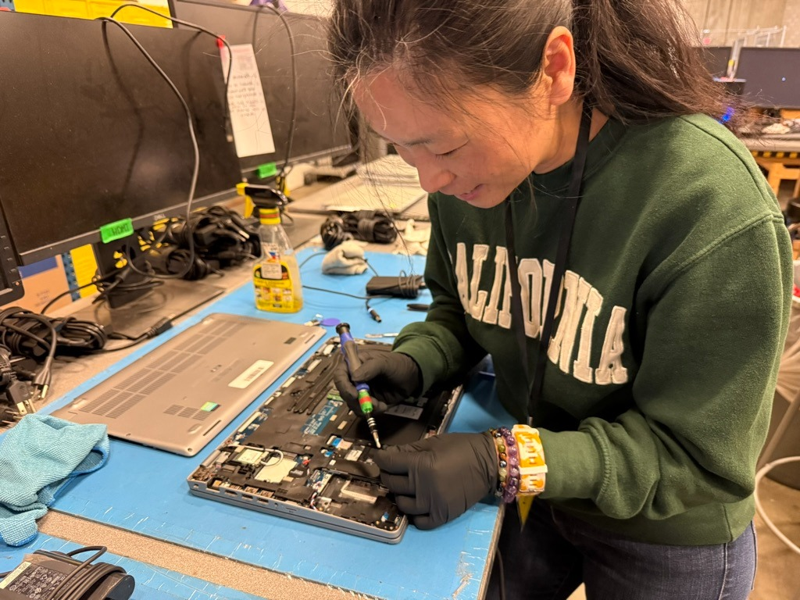
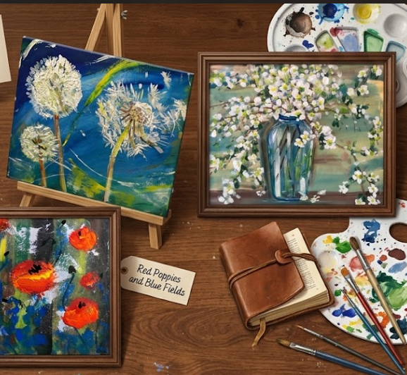
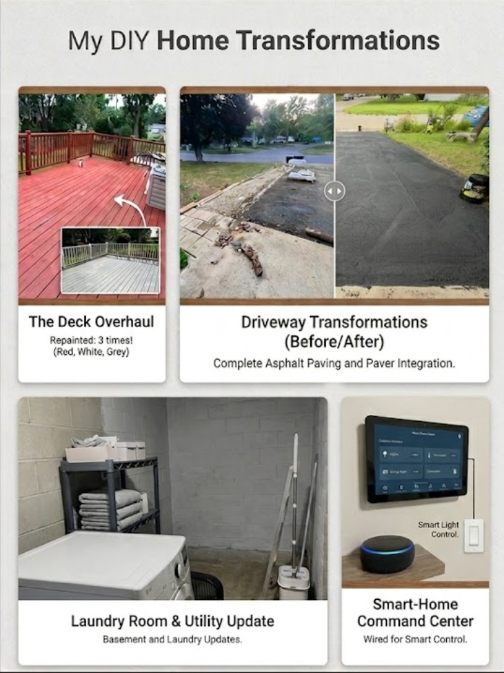

🌲 Life & Craft
The person behind the work.
Outside the Screen
When I'm not building, I'm somewhere outside.
Twenty-plus national parks and counting. Hiking when I can, kayaking when I'm near water, hunting wild mushrooms when the season's right. In Minnesota winters, when the trails are buried, I make small-batch lip balms and soaps by hand — careful measurement, slow heat, gifts for the people I love.


Different materials. Same instinct.
Pay attention. Move carefully. Make something good.
🧰 Fix First, Hire Second
I'd rather learn it than outsource it.
I volunteer with Minnesota Tech for Success weekly, refurbishing laptops and computers for people who need them. At home, I've repainted the deck three times, repaved my own driveway, installed my dishwasher and garage door opener, and wired the house for smart-home controls through Alexa.
When I delivered mail through Minnesota winters, I listened to podcasts. I read. I painted. I picked up new skills the way other people pick up groceries — as part of the week, not as a project.



I fix before I hire, if it's safe to try.
Most things are learnable. Most people just haven't been told that yet.